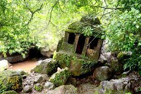

Ram-Linga Caves
Ancient and beautiful cave temple from the Ramayana period and is famous for the myth that Lord Rama resided here during his fourteen-year exile. The structure of the temple is quite old and the main idol is a ‘Shivling’ inside the cave.
History
Mahadev Gurav, priest of the Ramling temple, said, “It is believed that this Shivling is placed here by Lord Rama during his exile in the forests for 14 years. The cave was first discovered in 1906 by a saint travelling through this region.”